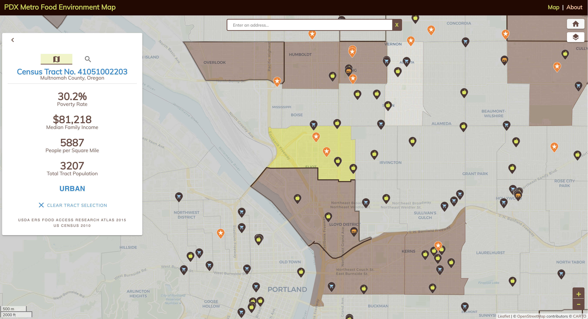
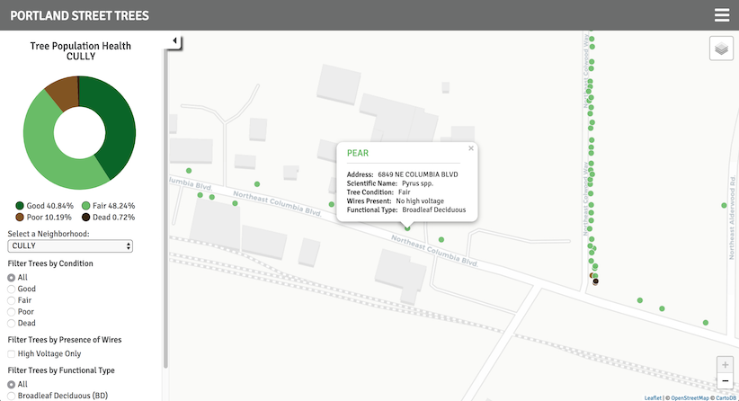
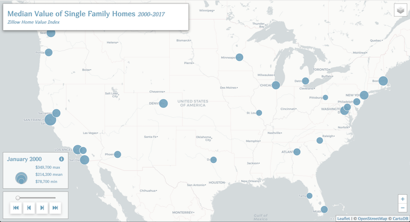
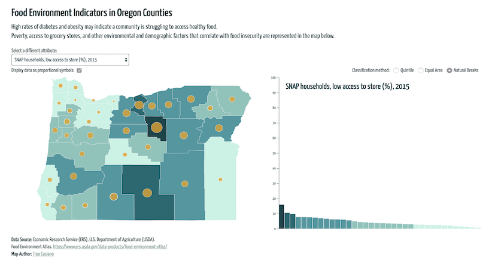
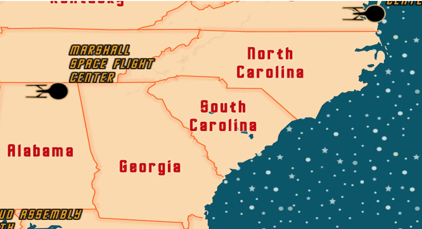
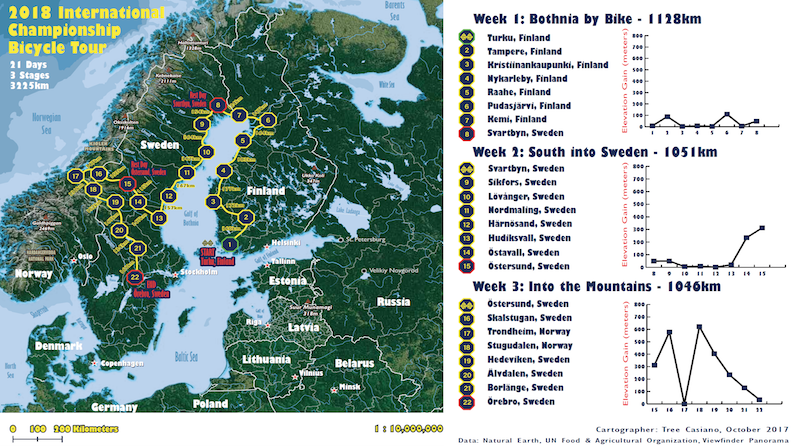

I am a software developer working on full stack JavaScript projects for a health care IT company. I have an MS degree in Cartography and GIS Development from the University of Wisconsin-Madison. I am leveling up new skills in cloud native technologies and data analytics. I am passionate about the art and science of writing code, designing software, making maps, playing music, and learning languages.
JavaScript. Vue. Vuetify. Node.js. Express. Open API. Leaflet. MySQL. PostgreSQL. Cypress. AWS. Agile methodologies. Relentless persistence. Meticulous attention to detail. Conscientious code hygiene.
Music. Maps. Math. Words. Woods. Cats. Code. Craft. Cake. Paints. Pens. Guitars. Mandolins. Pianos. Star Trek. Orchids. Oxford commas. Indian food. Italian desserts. Icelandic's interdental fricatives.

Interactive web map made with Leaflet, Vue.js, Vuetify, PostgreSQL, Node, Express, and data from the USDA Economic Research Service Food Access Research Atlas. Displays food access indicators and sources of healthy food in the Portland Metro area.

Interactive map made with Leaflet, D3, and data from Portland Parks & Recreation's Street Tree Inventory.

Interactive time series map made with Leaflet using Zillow Home Value Index Data.

Poverty, access to grocery stores, and other environmental and demographic factors that correlate with food insecurity are represented in this map. Made with D3 and data from the USDA Food Environment Atlas.


Map of a fictitious bicycle tour through Scandinavia. Made with ArcGIS, Adobe Photoshop, and Adobe Illustrator.